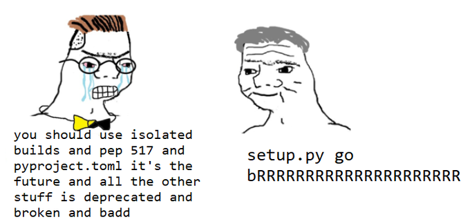

This lesson was found on Juan Luis Cano Rodríguez’s github profile when I came across his talk “Building the composable Python data stack with Kedro & Ibis” (bookmarked for learning later) in Pydata London 2024.
This is my notes:
00 intro
learning objectives
- Learn modern software engineering practices using Python
- Understand the value of automation in the software engineering process
- Gain insight into how Data Science projects are put in production
- Learn better techniques to collaborate in software projects
The instructor used Linux / Conda, err I just have Window here so there is no other way but right I will try to make stuffs work in Window. Let’s get started!

01 git
glossary
- Repository: Directory tracked by git, contains a
.gitfolder and it’s created by$ git init; - Commit: State or snapshot of the repository, they are created by
$ git commit; - Branch: A parallel or separate line of development, the default one is master and they are created by
$ git branchor$ git checkout -b.
git uses a Linux-like cli so now Linux cli 101 (and how to do the same on Window pwsh)
whoami: who am ipwd: print working directoryls: list all file in the dir,.for current folder,..for parent one (seems there is no--coloror-ain pwsh)cd: change dirtouch: create empty file (in pwsh we useecho "" >> file_name)cat: concatenate, print file contentsnano: edit a file from the command line (there is a way that allows us to do the same in win10, but ya, nope)
workflow
I did these in pwsh:
- Create a directory
mkdir test_projectand navigate therecd test_project; - Init a git repository
git init; - Check status
git status(“on branch master, no commits yet, nothing to commit”); - Create some files
echo "#Hello, world!" >> readme.md; - Stage the files
git add readme.md; - Commit the changes
git commit -m "initial commit";
Do not run git init on your home directory, as it can lead to confusion and potential data loss. If git status gives a lot of untracked files unrelated to your project, you might want to rm -rf .git and start in another directory. Notice that this command removes all git history.
branching
- Create and checkout to new branch
git switch -c branch1(-cstands for create); - Commit there (see above);
- Go back to main branch
git switch master; - Merge changes
git merge branch1; - Delete branch
git branch -d branch1(-dstands for delete, don’t forget this step!).
- Normally, the
git mergestep happens online using pull requests or merge requests, which are not git concepts, but GitHub/GitLab concepts. - If
git switchdoes not work for you, you might have an older version of Git. Consider upgrading, or alternatively replace allgit switch -cwithgit checkout -b.
Pull requests (PR) let you tell others about changes you’ve pushed to a branch in a repository on GitHub. Once a pull request is opened, you can discuss and review the potential changes with collaborators and add follow-up commits before your changes are merged into the base branch. – GitHub
A merge request (MR) is a proposal to incorporate changes from a source branch to a target branch. – GitLab
Remember to never commit to master. – Git Workflow
merging
2 types of merging:
- Fast-forward merge: There is no diverging history, and git just “advances the pointer” of the current branch.
git merge new-branch --ff-onlywill fail if a fast-forward merge is not possible; - Non fast-forward merge: The history diverged, and git will create a merge commit (hence ask for a commit message) with two parents that combines the two branches.
git merge new-branch --no-ffalways creates a merge commit even if a fast-forward merge is possible.
GitHub use --no--ff option for pull requests, see here, and this old-but-gold discussion.
- Non fast-forward merges can end up in conflicts. In that case, git will halt the merge operation and leave traces in the affected files;
- To abort a merge
git merge --abort(useful if we are scared and don’t know what to do); - To merge overriding everything with the upcoming branch
git merge new-branch --strategy-option theirs; - To merge overriding everything with the current branch
git merge new-branch --strategy-option ours.
Be careful while editing files that are in conflict.
other
- Ignoring files
.gitignore; - Amend the last commit:
git commit --amend; - Show pretty history:
git log --graph --oneline --decorate --all; - Configuring git aliases:
git config --global alias.lg "log --graph --oneline --decorate"(and now you havegit lg!).
This excellent chart will help you in git workflow decision making.

triangular workflows in git
When collaborating with a project hosted online on GitHub or GitLab, the most common setup is having a central repository, one remote fork per user, and local clones/checkouts:

Notice the different naming conventions between this website and the first image:
- Convention 1: upstream/origin/local
- Convention 2: origin/
/local
We will be consistent with the Aaron Meurer guide and therefore use Convention 2 all the time.
after creating a PR
After your pull request has been merged to master, your local master and <username>/master will be outdated with respect to origin/master. On the other hand, you should avoid working on this branch anymore in the future: remember branches should be ephemeral and short-lived.
To put yourself in a clean state again, you have to:
- Click “remove branch” in the pull request (don’t click “remove fork”!);
git checkout master(go back to master);git fetch origin(never, ever usegit pullunless you know exactly what you’re doing)git merge --ff-only origin master(update your local master with origin/master, and fail if you accidentally made any commit in master)git fetch -p <username>(✨ acknowledge the removal of the remote branch ✨)git branch -d old-branch(remove the old branch)git push <username> master(update your fork with respect to origin)git checkout -b new-branch(start working in the new feature!)
This process has to be repeated after every pull request.
Some organizations where all the members are trusted do not use forks, and everybody pushes their branches to the same repository instead. While this simplifies some parts of the workflow, it also requires proper checks in place to prevent bad code to be merged - for example, by requiring a minimum number of reviews or some automated status checks.
02 pythonpath
how does import work?
How do import os, pandas work? If pandas was not installed, what happen?
how can I import my code?
There are three ways to import our own code:
- Being on the same directory: This is the quickest, however it scales quite poorly (imagine having all of pandas and scikit-learn in a single directory to do any data analysis project!)
- Appending our code location to PYTHONPATH: This is effective, but we will try to avoid it because it can bring problems in the future.
- Making our code installable: Since any code that’s installed can be imported, this shifts the question to “how to make our code installable”.
my first python lib
We will create a new Python library, “IE Titanic utils”, to analyze the Titanic dataset. I will create a project ie-titanic-utils, add readme.md and .gitignore files.
mkdir it-titanic-utils
git init
echo "# This is utility to help analyze Titanic dataset" >> readme.md
Invoke-WebRequest -Uri "https://www.toptal.com/developers/gitignore/api/python,jupyternotebooks" | Select-Object -ExpandProperty Content | Out-File -FilePath .gitignore -Encoding utf8
git add readme.md .gitignore
git commit -m "initial commit"Now I will create str_utils.py file (using VS code for convenience), with a function called tokenize that takes a str sentence and splits it into a list of words.
In pwsh, I can import and use this function
the PYTHONPATH
We saw above that we could easily import our tokenize function. However, this only works if we are in the same directory. Why? Python looks in some predefined locations to know where to find what we want to import, called the “PATH”.
Therefore, there are two ways of making our code globally importable:
- Modify the “PATH”
- Put our code inside a location predefined in the “PATH”
The first option can be achieved like this:
Or, alternatively, from outside of the interpreter: export PYTHONPATH=/home/username/ie-titanic-utils.
However, both are bad practices and should be avoided.
what does import do?
Python code is normally written in .py scripts. These scripts can be imported in the same way that any model or package from the standard library can:
$ python3
>>> import math # Works, because it's in stdlib
>>> import numpy as np # Works if you ran `pip install numpy` in advance
>>> import str_utils # Works if you are in the same directory
['Hello,', 'world!']
>>> When the user imports a script, Python runs the script. That’s the way all the possible functions and classes inside it are available.
how to separate “running code” from reusable pieces
A Python module (any .py script) might contain code that we want to run, as well as code that we only want to import. To separate these, we use this trick:
ie-titanic-utils get-content -Tail 2 .str_utils.py
if __name__ == "__main__":
print(tokenize("hello, world!"))
ie-titanic-utils python .str_utils.py # The `print` runs
['hello,', 'world!']
ie-titanic-utils python
>>> from str_utils import tokenize
>>> tokenize("Hi, world!")
['Hi,', 'world!'] # The `print` doesn't run!
>>>Here is what Claude sonnet 3.5 gave me:
To separate code that we want to run directly from code that we only want to import, we should use the if __name__ == "__main__": idiom in Python. This is a common pattern that allows a Python script to be both importable and executable. Here’s an explanation:
- When a Python file is run directly, Python sets the special
__name__variable to “__main__”. - When a Python file is imported as a module,
__name__is set to the name of the module.
By using this idiom, we can control which code runs when the script is executed directly versus when it’s imported as a module.
03&04 pip vs. conda
managing python environments

Simple is better than complex.
Complex is better than complicated.
How do people install and upgrade Python? -> Most of people choose Python.org, the same for me!
This way ships a tool to create development environments (venv). However, venv cannot create environments with different Python versions (you’re tied to the one you downloaded) and certain packages will require extra steps to be installed. Therefore, it is not for everyone.
Juan chose to use conda. As I am learning Docker, I choose Docker for this tutorial.
How do people create isolated development environments? -> The most popular is Virtualenv. But normally when doing an analysis task, I use venv which is built-in python lib. Recently I followed my dev team to use pipenv, I do also see poetry is worth-learning approach.
“More than a half of the users of Jupyter Notebook and JupyterLab choose Conda”
As I think a model which is not deployed yet is useless model, I choose VS Code and Docker - more deployment-oriented.
summary
For the user, the most salient distinction is probably this: pip installs python packages within any environment; conda installs any package within conda environments.
—Jake Vanderplas
However, I will be using pipenv to achieve what Juan done in upcoming sections. I will specify version of each package I used.
pip and PyPI
pip is the default Python installer. By default, it fetches packages from https://pypi.org/, which is the community repository for Python packages.
05 layout
here is my project’s layout:
ie-titanic-utils
├─ src
│ └─ ie_titanic_utils
│ ├─ __init__.py
│ └─ ...
├─ tests
│ └─ ...
├─ .gitignore
├─ README.md
└─ pyproject.toml- The
src/package_namecontains the source code of the library.package_namemust be Python identifier. It should contain a__init__.pythat can be empty; - The
testsdirectory contains the tests. It must not contain any__init__.pybecause it’s not meant to be imported as a package. In very specific cases it’s included insidesrc/package_name; - Every project contains a
README.mdthat at least explains what the project is; pyproject.tomlcontains the metadata of the project. The absolutely required fields aremodule,author, and some extra information that tells Python how to install the package.
creating a package
- run
flit initto create the metadata
ie-titanic-utils flit init
pyproject.toml exists - overwrite it? [y/N]: y
Module name [ie_titanic_utils]: ie_utils
Author: Tuan Le Khac
Author email: tuan.lekhac0905@gmail.com
Home page:
Choose a license (see http://choosealicense.com/ for more info)
1. MIT - simple and permissive
2. Apache - explicitly grants patent rights
3. GPL - ensures that code based on this is shared with the same terms
4. Skip - choose a license later
Enter 1-4: 4
Written pyproject.toml; edit that file to add optional extra info.- place some code under the source directory. In
__init__.pythere must be a docstring giving a description of the project and a__version__variable indicating the version:
- Install the code using
pip install! (this did not work for me currently. edit: the project name should match thesrc/package_nameomg)
ie-titanic-utils pip install .
Processing .ie-titanic-utils
...
Successfully installed ie_titanic_utils-0.1.0
ie-titanic-utils python
Python 3.11.4 (tags/v3.11.4:d2340ef, Jun 7 2023, 05:45:37) [MSC v.1934 64 bit (AMD64)] on win32
Type "help", "copyright", "credits" or "license" for more information.
>>> import ie_titanic_utils
>>> ie_titanic_utils.__version__
'0.1.0'
>>> readme.mdand a.gitignorefiles were created.- commit the change
git checkout -b first_module # i should be using switch (-c) haha, checkout is old syntax
git status
git add .
git commit -m "initial very first module"
git checkout master
ie-titanic-utils git merge --no-ff first_module
Merge made by the 'ort' strategy.
pyproject.toml | 30 ++++++++++++++++++++++++++++++
src/ie_titanic_utils/__init__.py | 6 ++++++
src/ie_titanic_utils/str_utils.py | 6 ++++++
3 files changed, 42 insertions(+)
create mode 100644 pyproject.toml
create mode 100644 src/ie_titanic_utils/__init__.py
create mode 100644 src/ie_titanic_utils/str_utils.py
git branch -d first_module
# git push origin master
# as I will not upload this code to GitHub
# https://stackoverflow.com/questions/32238616/git-push-fatal-origin-does-not-appear-to-be-a-git-repository-fatal-could-nNow if I log the git, I will see this:
ie-titanic-utils git log --graph --oneline --decorate --all
* 39105c7 (HEAD -> master) Merge branch 'first_module'
|
| * 7a33844 initial very first module
|/
* 793bd67 initial commitYeah til now I can create a “package” in my computer and install so I can use it globally. But I have not use any env management yet.
intermezzo: version numbers
- Version numbers for Python packages are explained in PEP 440
- For libraries, the most widely used convention is semantic versioning: X.Y.Z
- Z must be incremented if only backwards compatible bug fixes are introduced (a bug fix is defined as an internal change that fixes incorrect behavior)
- Y must be incremented every time there is new, backwards-compatible functionality
- X must be incremented every time there are backwards-incompatible changes
- Between releases, the version should have the
.dev0suffix - Recommendation: start with 0.1.dev0 (development version), then make a
0.1.0release, then progress to0.1.1for quick fixes and0.2.0for new functionality, and when you want to make a promise of relative stability jump to1.0.0. - For applications, other conventions are more appropriate, like calendar versioning:
[YY]YY.MM.??
project requirements
Sometimes our project will depend on third-party libraries (pandas, scikit-learn). To make pip install those dependencies automatically, we can add them to our pyproject.toml under the [tool.flit.metadata] section, using the requires option:
[build-system]
requires = ["flit_core>=3.4"]
build-backend = "flit_core.buildapi"
[project]
name = "ie_titanic_utils"
authors = [{name = "Tuan Le Khac", email = "tuan.lekhac0905@gmail.com"}]
readme = "readme.md"
requires-python = ">=3.11"
dynamic = ["version", "description"]
classifiers = [
"Programming Language :: Python :: 3",
"License :: OSI Approved :: MIT License",
"Operating System :: OS Independent",
]
requires = [
"pandas",
"matplotlib>=2",
]We might want to specify optional dependencies that should only be installed upon request, or for some specific purposes. A typical example will be development dependencies: we will need things like pytest and black, but we don’t want the user to install them as part as our library. To do that, we can specify groups of optional dependencies under the tool.flit.metadata.requires-extra section:
In my case, I use `project.optional-dependencies`: flit_core.config.ConfigError: Use [project] table for metadata or [tool.flit.metadata], not both.
[project.optional-dependencies]
dev = [
"pytest>=6.0",
"black>=20.8b1",
]That way, they will only get installed when [dev] is added after the name of our library:
06 unit test
If you use software that lacks automated tests, you are the tests.
— Jenny Bryan (@JennyBryan) September 22, 2018
Testing is essential. Computers excel at doing repetitive tasks: they basically never make mistakes (the mistake might be in what we told the computer to do). Humans, on the other hand, fail more often, especially under pressure, or on Friday afternoons and Monday mornings. Therefore, instead of letting the humans be the tests, we will use the computer to frequently verify that our software works as specified.
I will be using pytest to achieve this.
test-driven development
The “test-driven development mantra” is Red - Green - Refactor:

- Write a test. Watch it fail.
- Write just enough code to pass the test.
- Improve the code without breaking the test.
Repeat.
testing in Python
Summary: use pytest. Everybody does. It rocks.
pytest is a testing framework for Python that makes writing tests extremely easy. It is much more powerful than the standard library equivalent, unittest. We can use by install it first pip install pytest.
We can write a function that test the tokenize funtion:
tests/test_tokenize.py
and we run it from the command line:
ie-titanic-utils pytest
============================================================================================ test session starts ============================================================================================
platform win32 -- Python 3.11.4, pytest-8.2.2, pluggy-1.5.0
rootdir: .ie-titanic-utils
configfile: pyproject.toml
plugins: anyio-3.7.1, time-machine-2.14.0
collected 1 item
teststest_tokenize.py . [100%]
============================================================================================= 1 passed in 0.02s ============================================================================================= The test successed after I fixed the __init__.py:
07&08 oop
what are “objects” anyway?
like pandas’s DataFrame or matplotlib’s Figure, an object is sthg that has:
- object-bound variables: call properties;
- object-bound functions: call methods.
if the object’s properties can change, we say they have states, in that case they are mutable. otherwise, they are stateless and immutable. a typical example is list (mutable) and tuple (immutable).
[1, 2, 3]
[1, 2, 3, 4]Show the code
(1, 2, 3)['__add__', '__class__', '__class_getitem__', '__contains__', '__delattr__', '__dir__', '__doc__', '__eq__', '__format__', '__ge__', '__getattribute__', '__getitem__', '__getnewargs__', '__getstate__', '__gt__', '__hash__', '__init__', '__init_subclass__', '__iter__', '__le__', '__len__', '__lt__', '__mul__', '__ne__', '__new__', '__reduce__', '__reduce_ex__', '__repr__', '__rmul__', '__setattr__', '__sizeof__', '__str__', '__subclasshook__', 'count', 'index']Immutable objects have the advantage that they can be hashed, that is: they can be transformed, using some cryptographical function, into something that uniquely represents that object. Mutable objects can’t, because the hash would have to change every time the state of the object changed. Dictionary keys have to be hashable objects.
classes and instances
objects are defined by instantiating a class. a class is a template for objects, where we define it’s behaviours, an instance is a particular realization of that class.
Example
we want model the User of our company’s product, to later study their behaviours:
User class is of type type, which means that is can be used to created new objects. Let’s create 2 instances:
<__main__.User object at 0x000001B1AD8D4F90>
<__main__.User object at 0x000001B1AD8D4D90>with a slight abuse of notation, we would say we have 2 User objects, or just 2 Users.
Using the instance: self
let’s add a very simple method to demonstrate explicit self, a very important concept. a method is like a function bounded to the object, an can use it’s properties:
why are methods (instead of plain functions) interesting? Because of duck typing:
“If it walks like a duck and it quacks like a duck, then it must be a duck” – https://en.wikipedia.org/wiki/Duck_typing
if something has a method that I need, I don’t care about its type.
Show the code
2.0
2.0notice how we called user1.test() without passing an extra argument? This is because Python is automatically passing the instance. It’s the equivalent of doing this (never do this):
in fact, if we define a method without a first parameter, it will fail when we call it:
this first parameter can be called anything, but everybody uses self. Remember, conventions are important to minimize surprise and enhance collaboration!
intermezzo: f-strings
Show the code
This is <__main__.User object at 0x000001B1AD8D4590>
This is <__main__.User object at 0x000001B1AD8D4590>
This is : <__main__.User object at 0x000001B1AD8D4590>
Noneinitializing our instances
The ellipsis (...) is a built-in constant in Python. It’s an instance of the ellipsis (dấu chấm lửng) class.
common uses of ellipsis:
- as a placeholder in function definitions or class bodies
- in type hinting (especially for variable-length tuples)
- in slicing operations (especially for multidimensional arrays in libraries like NumPy)
Show the code
Processing point: (1, 2)
Processing point: (3, 4, 5)
Processing point: (6,)however, this is considered a bad practice, and can confuse editors and static analysis tools. These properties should be specified on creation, in a way that I cannot have a user without name and signup_date. Python provides us a special method, __init__ (this should not be confused with file __init__.py we put to project to tell Python our code is a package), that initializes1 the object:
1 This philosophy used to be summarized by the sentence “we are all consenting adults here”, which is nowadays being less used.
Show the code
John Doe
2024-08-01 23:07:08.587740that’s something! However, there are several things we can improve:
- it can be cumbersome to specify the date every time, and it would be nice to have some default.
- the default representation of the instances contains some hexadecimal memory address and nothing else. It would be nice to at least see the user name and the signup date
- nothing stops me from changing the name and signup_date of a existing user:
exercise
- make
signup_dateoptional by providing a default value; - make the
__repr__method return a string containing thenameandsignup_date, which will override the default.
Show the code
class User:
def __init__(self, name, signup_date=None):
if signup_date is None:
signup_date = dt.datetime.now() # Watch out with default parameters! They are created when the function is defined.
self.name = name
self.signup_date = signup_date
def __repr__(self):
return f"User(name='{self.name}', signup_date={repr(self.signup_date)})"extra: date formatting
Show the code
'2024-08-01T23:07:08.625045'protecting properties
in Python, there are no private attributes (neither properties nor methods), and in fact everything can be accessed 2. However, we can “hide” them by default in autocomplete and other environments by using a leading underscore _: this is usually called protected variables.
2 This philosophy used to be summarized by the sentence “we are all consenting adults here”, which is nowadays being less used.
there is a common pattern in which, if I want to make some property read-only, we can:
- make it protected
- create a “getter” using the @property decorator, which gets the value of the protected property with a public name
Show the code
class User:
def __init__(self, name, signup_date=None):
if signup_date is None:
signup_date = dt.datetime.now()
self._name = name
self._signup_date = signup_date
@property
def name(self):
return self._name
@property
def signup_date(self):
return self._signup_date
def __repr__(self):
return f"User(name='{self.name}', signup_date='{self.signup_date}')"If you see tutorials mentioning “true private variables”, they are wrong!
The behavior you’re experiencing is due to a feature in Python called “name mangling” for private attributes. Let’s break down what’s happening:
Double underscore prefix:
- When you define an attribute with a double underscore prefix (__) in a class, Python automatically mangles the name to avoid naming conflicts in inherited classes.
- Name mangling process: Python changes the name from __name to _ClassName__name. In your case, it becomes _Test__name.
- Accessing the attribute: Because of this name mangling, you can’t access t1.__name directly. Instead, you would need to use the mangled name.
Show the code
class Test:
def __init__(self, name):
self.__name = name # This gets mangled
t1 = Test("This name")
# This will raise an AttributeError
try:
print(t1.__name)
except AttributeError as e:
print(f"AttributeError: {e}")
# This will work
print(t1._Test__name)
# You can see all attributes, including mangled ones
print(dir(t1))AttributeError: 'Test' object has no attribute '__name'
This name
['_Test__name', '__class__', '__delattr__', '__dict__', '__dir__', '__doc__', '__eq__', '__format__', '__ge__', '__getattribute__', '__getstate__', '__gt__', '__hash__', '__init__', '__init_subclass__', '__le__', '__lt__', '__module__', '__ne__', '__new__', '__reduce__', '__reduce_ex__', '__repr__', '__setattr__', '__sizeof__', '__str__', '__subclasshook__', '__weakref__']inheritance
- the diamond problem: https://www.wikiwand.com/en/Multiple_inheritance#/The_diamond_problem
- ???: https://softwareengineering.stackexchange.com/questions/238176/why-would-square-inheriting-from-rectangle-be-problematic-if-we-override-the-set/238184#238184
- liskov substitution principle: https://www.wikiwand.com/en/Liskov_substitution_principle
- composition and inheritance: https://www.thedigitalcatonline.com/blog/2014/08/20/python-3-oop-part-3-delegation-composition-and-inheritance/
more special methods
go search for python data model
09&10 flask
- flask is a “lightweight framework” or a “microframework”. “It is designed to make getting started quick and easy, with the ability to scale up to complex applications”, and therefore requires less context to get started with;
- django is a “batteries included” framework that is more focused on good practices and encouraging a “clean, pragmatic design”. It’s more complex and requires more experience to master.
conclusion
where do we go from here
- Keep improving the art of Python packaging
- Explore other options for high performance Python
- Help “bridging the gap”
- Engage with the (open source) Python community
keep improving the art of python packaging
- recommend:
pip-tools+requirements.in=requirements.txt - Poetry, Pipenv… Yes, they work, but they are way more complex and have “lock-in”
- All companies I worked for struggle sooner or later with their code deployment practices. Now, you know better
explore other options for high performance python
- Juan mentioned: Numba, Modin, Vaex, Dask, Spark, Coiled, Prefect
- Now we have more: polar, pandas 2.0, aiflow, dagster, dbt, etc

other resources
- NBViewer for this lecture;
- PyData, a community for developers and users of open source data tools;
- Pro Git,
--distributed-is-the-new-centralized; - Pull Requests;
- Merge Requests;
- Git Workflow, the git workflow for contributing to open source repositories;
- Git Ignore builder;
- Git commit –amend, rewriting history;
- The right way to distribute Python code
- Python packaging
- Pytest.